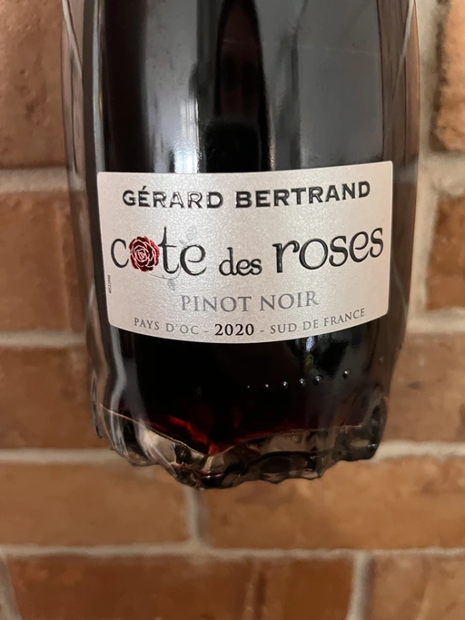
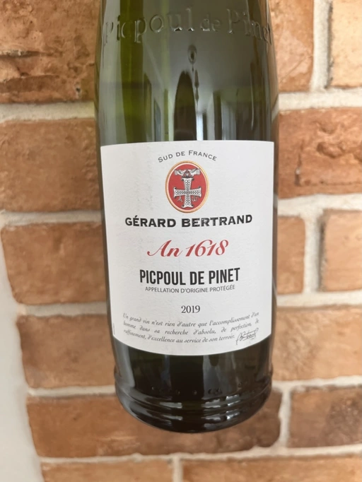
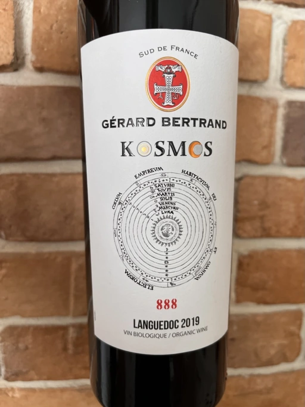
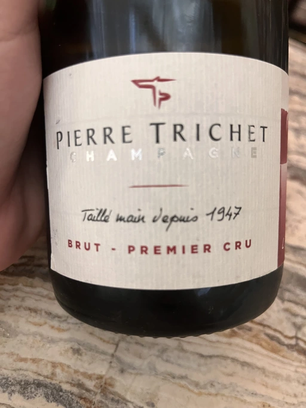

- Type
- Red Still, Dry
- Producer
- Gérard Bertrand
- Vintage
- 2020
- Location
- France, IGP Vin de Pays d’Oc
- Grapes
- Pinot Noir
- Alcohol
- 13.5
- Sugar
- NA
- Price
- 575 UAH
- Cellar
- N/A
Ratings
2022-07-16 - 7.40
I wanted something easy-going to be a background for a pleasant conversation, and I got it. Cherry, spices, wet forest floor and smokiness. Fresh, juicy, well-balanced, and flavourful: spices and smoked cherry. Better served chilled.
Related

Gérard Bertrand
An 1618 Picpoul de Pinet - 2019

Gérard Bertrand
An 825 Crémant de Limoux Brut - 2019

Gérard Bertrand
Cote des Roses Sauvignon Blanc - 2020

Gérard Bertrand
Héritage Kosmos 888 - 2019

Pierre Trichet
L’Authentique Premier Cru Brut - NV

Loimer
Pet Nat - 2020

Villa Clara
Cava Brut - NV